이 문서 하나가 기획과 디자인의 기준이다. 스크린샷은 전부 배포된 사이트(2026-09-23 빌드)에서 폰 가로 비율로 찍었고, 그림은 설명을 돕는 생성 이미지다. 숫자는 코드 기준이다. 다른 문서와 다르면 이 문서가 맞다.
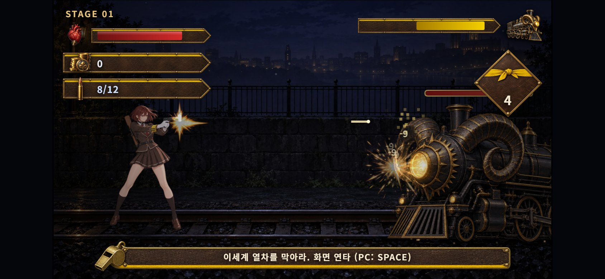
라이브 전투 화면. 왼쪽 선도부장, 오른쪽에서 오는 이세계 열차. 화면을 두드리면 쏜다.
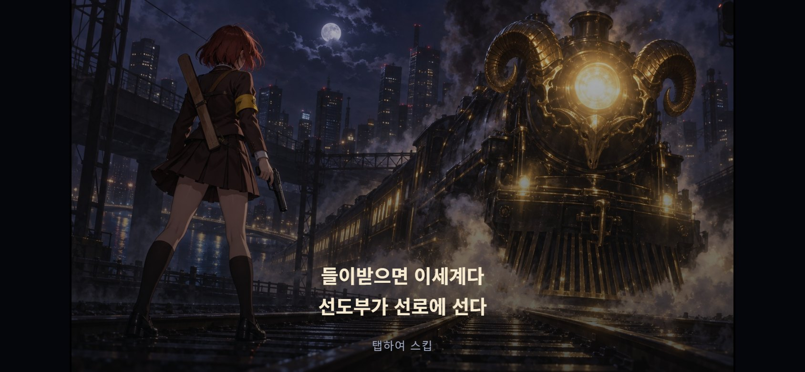
인트로(첫 판에만 3초). 자막 두 줄이 세계관의 전부다: 「들이받으면 이세계다 / 선도부가 선로에 선다」.
시간표에 없는 열차가 등굣길 학생을 들이받아 이세계로 보낸다. 정체는 모른다. 막으면 다음 열차가 온다. 열차 자체가 적이고, 열차에서 좀비(이세계 개체)가 내린다.
유일하게 선로에 서는 사람들. 플레이어는 선도부장(갈색 교복, 노란 완장, 등에 체육판, 권총). 옆에서 쏘는 동료는 선도부 위원, 몸으로 막는 이는 체육부장.
주인공은 자리를 지킨다. 움직이는 건 열차와 좀비뿐이다. 세계관을 화면에 설명하지 않는다 — 인트로 한 컷과 게임오버의 「TRAIN BREACH」로 충분하다.
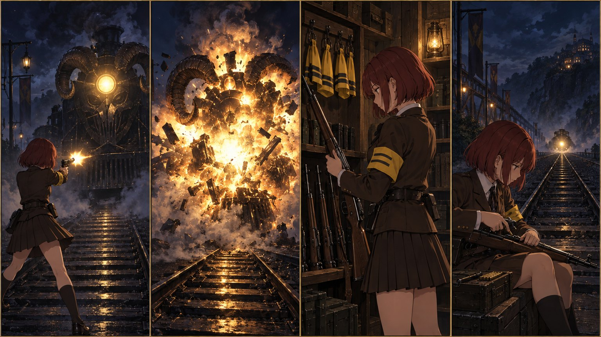
① 연타로 막는다 → ② 열차가 터진다 → ③ 비품실에서 산다 → ④ 다음 열차가 온다. 이 네 칸이 끝없이 돈다.
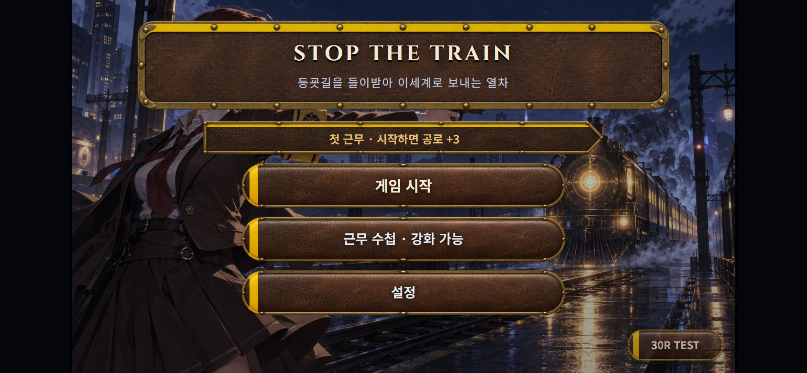
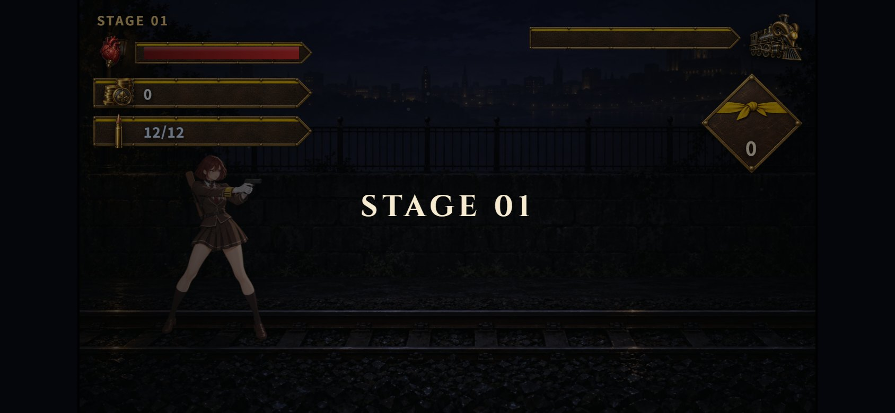
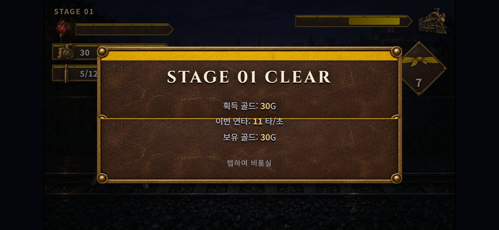
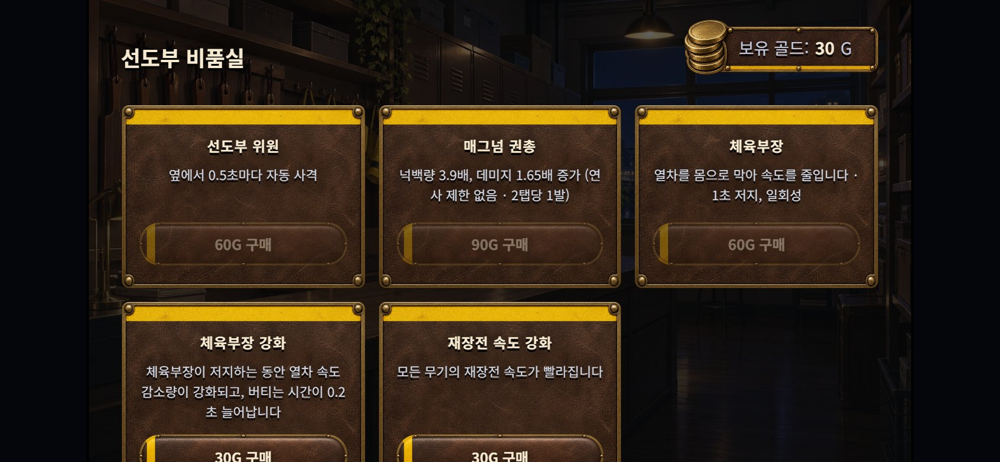
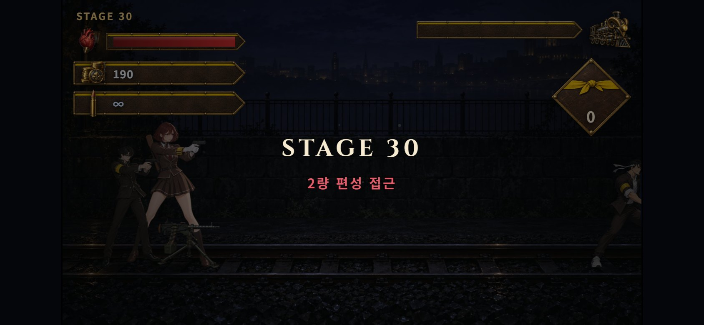
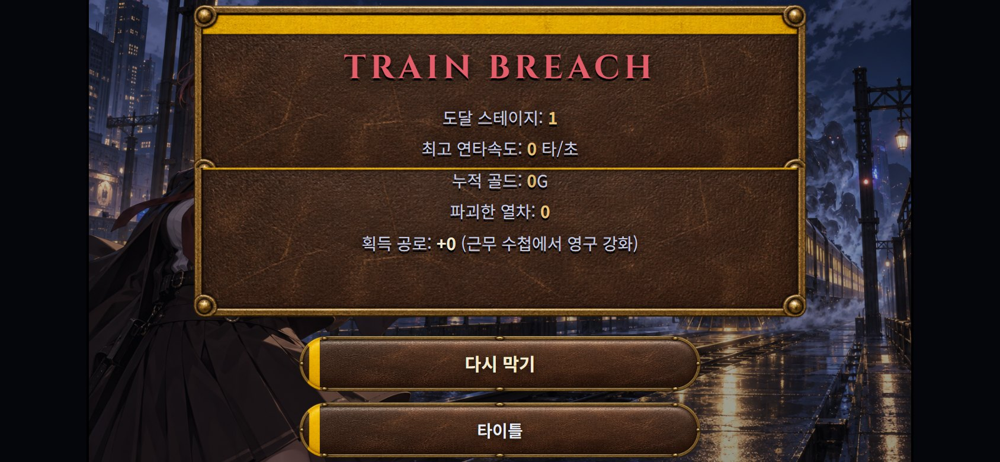
전환 연출은 모두 탭으로 넘길 수 있다. 첫 판 안에 첫 클리어 → 첫 비품실 → 다음 열차가 이어지는 것이 핵심이다. 정산 없이 상점으로 점프하지 않고, 결과 없는 게임오버를 만들지 않는다.
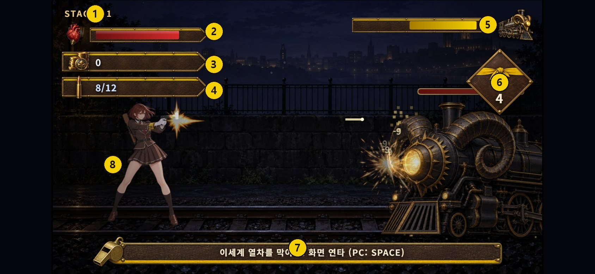
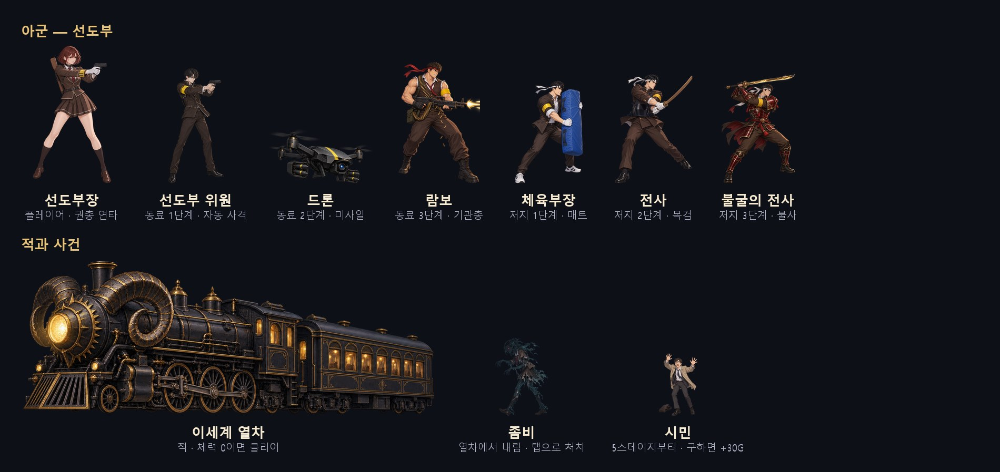
라이브 스프라이트 그대로. 크기 비율도 게임과 같다. 동료 라인(위원 → 드론 → 람보)과 저지 라인(체육부장 → 전사 → 불굴의 전사)은 비품실에서 단계별로 올라간다.
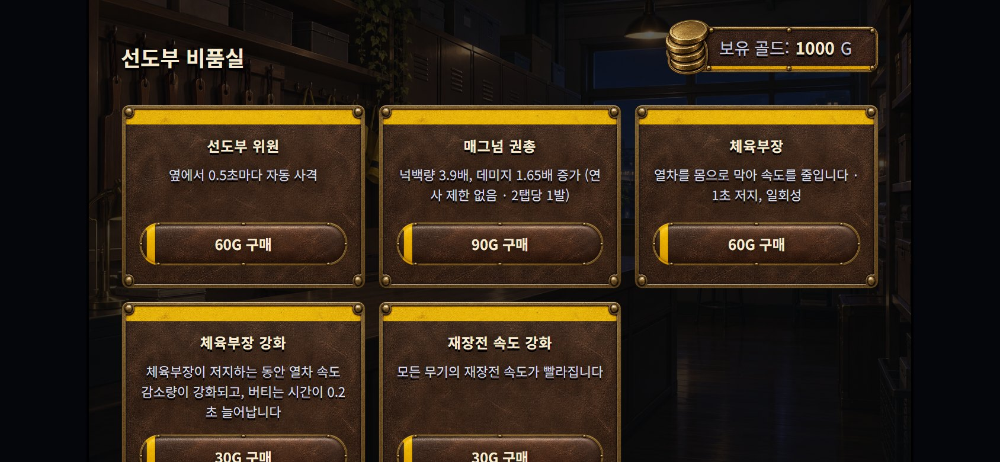
비품실. 카드 하나가 성장 축 하나다. 왼쪽부터 동료 / 무기 / 체육부장, 아랫줄은 체육부장 강화와 재장전.
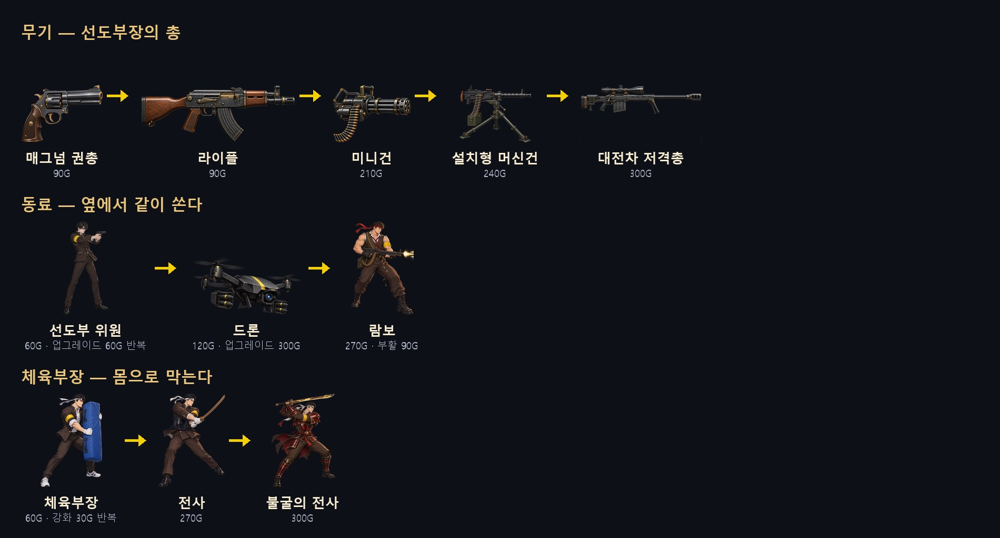
성장 3축. 같은 카드를 다시 사면 다음 단계가 나온다. 화살표 순서대로 올라간다.
중요: 비품은 그 판 안에서만 유지된다. 들이받히면 골드와 함께 사라진다. 판을 넘는 성장은 7장의 공로가 맡는다. 열차 1대 = 30G, 2호차 = 60G, 시민 구조 = 30G.
| 축 | 단계 | 가격 | 하는 일 |
|---|---|---|---|
| 무기 | 매그넘 권총 | 90G | 2탭당 1발. 데미지 1.65배, 넉백 3.9배 |
| 라이플 | 90G | 탭당 2발. 데미지 1.3배, 넉백 2배 | |
| 미니건 | 210G | 탭당 3발, 장탄 100. 재장전 느림, 발당 데미지·넉백 절반 | |
| 설치형 머신건 | 240G | 탭당 3발, 탄약 무제한(∞), 넉백 미니건의 1.5배 | |
| 대전차 저격총 | 300G | 4탭당 1발, 고정 데미지 170, 넉백 매그넘의 6배 | |
| 동료 | 선도부 위원 | 60G | 옆에서 0.5초마다 자동 사격 |
| 위원 업그레이드 | 60G (반복) | 공격 속도 상승, 최속 70ms | |
| 드론 | 120G | 머리 위 호버링, 미사일. 넉백 매그넘의 3배 | |
| 람보 | 270G (부활 90G) | 기관총, 최속 위원의 2배 연사. 좀비 3회 타격에 쓰러짐 | |
| 드론 업그레이드 | 300G | 유도 미사일로 좀비 자동 타격, 발사 속도 2배 | |
| 체육부장 | 체육부장 | 60G (재고용 30G) | 열차를 몸으로 저지. 감속 + 1초 버팀 |
| 체육부장 강화 | 30G (반복) | 감속량 강화, 버팀 +0.2초 | |
| 전사 | 270G | 목검으로 좀비 처치 + 매 스윙 열차 고정 50 피해, 버팀 4초 | |
| 불굴의 전사 | 300G | 카운트다운 없이 쓰러지지 않는다 | |
| 보조 | 재장전 강화 | 30G (반복) | 모든 무기의 재장전 속도 향상 (미니건은 별도 3단, 30G) |
| 광고 보상 | — | +60G. 비품실 1회당 1번 |
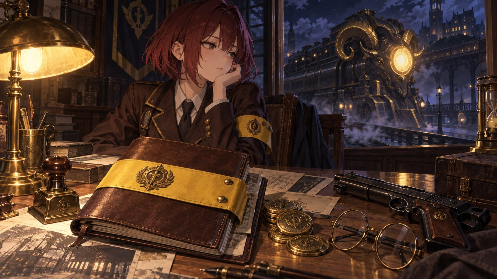
공로는 판이 끝나도 남는 유일한 재화다. 근무 수첩에 쌓이고, 거기서 쓴다.
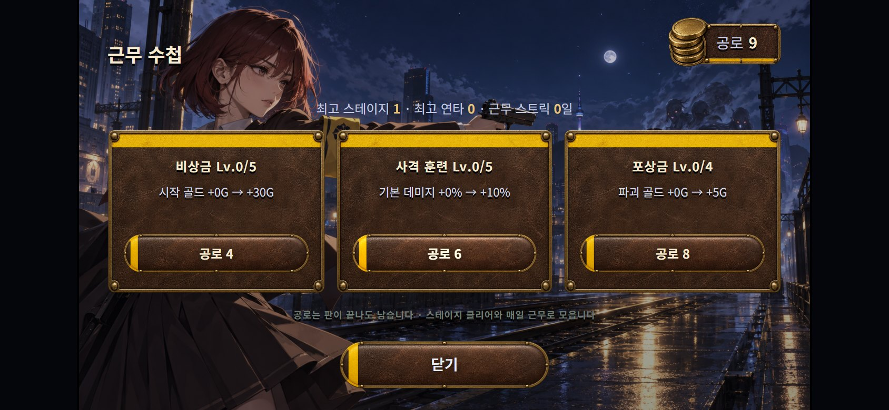
근무 수첩 화면. 위에 보유 공로, 아래 영구 강화 3종. 살 수 있으면 타이틀 버튼이 「근무 수첩 · 강화 가능」으로 바뀐다.
첫날 예시: 근무 3 + 5스테이지 도달 4 = 공로 7 → 첫 세션 안에 첫 강화(비상금 1단, 공로 4)를 산다. 다음 판은 시작 골드 30G로 시작하니 1스테이지만 막으면 바로 위원(60G)을 살 수 있다.
| 강화 | 효과 / 단계 | 공로 가격 |
|---|---|---|
| 비상금 | 판 시작 골드 +30G, 최대 5단 (+150G) | 4 · 8 · 12 · 16 · 20 |
| 사격 훈련 | 기본 사격 데미지 +10%, 최대 5단 (+50%) | 6 · 10 · 14 · 18 · 22 |
| 포상금 | 열차 파괴 골드 +5G, 최대 4단 (+20G) | 8 · 12 · 16 · 20 |
공로는 광고로 주지 않는다. 저장은 localStorage(최고 스테이지·연타, 근무 스트릭, 공로, 강화 단계, 설정) — 게임 진행은 백엔드 없이 돈다.
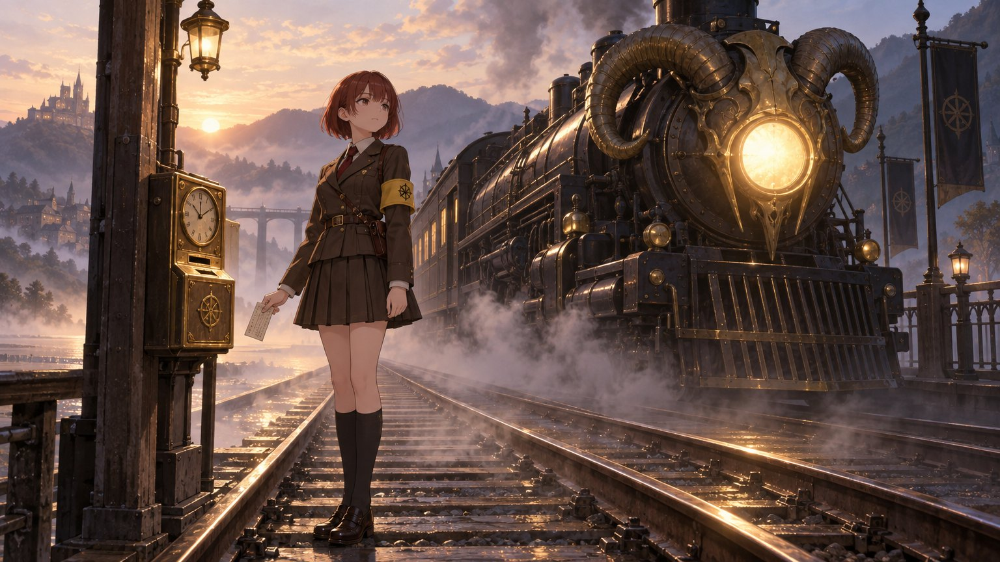
「근무」는 매일 첫 판을 시작하면 자동으로 찍힌다. 하이점수 숫자만으론 내일 안 온다 — 내일 오면 무엇을 받는지가 보여야 한다.
| 상황 | 타이틀에 보이는 한 줄 |
|---|---|
| 처음 | 첫 근무 · 시작하면 공로 +3 |
| 오늘 근무함 | 오늘 근무 · 스트릭 n일 · 내일 오면 공로 +X |
| 어제 하고 오늘 아직 | 스트릭 n일 · 오늘 근무하면 공로 +X |
| 끊김 | 근무가 끊겼습니다 · 오늘 다시 서면 공로 +3 |
v3까지는 근무 보상이 골드(10~50G)였다. 첫 상품(60G)보다 싸고, 죽으면 사라져서 체감이 없었다. 지금은 공로라서 남는다.
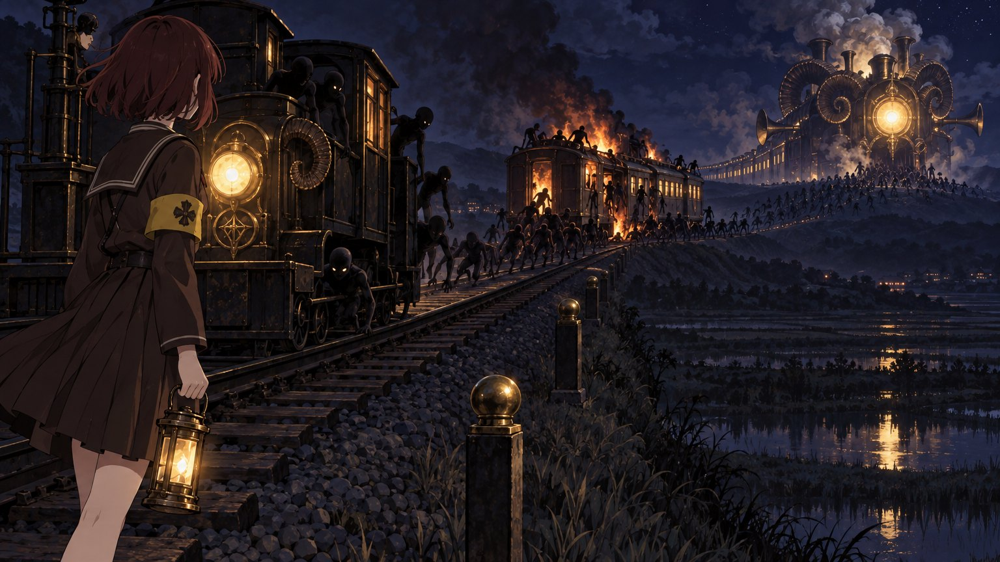
체력·속도만 오르면 “같은 판”으로 읽힌다. 그래서 5스테이지 안팎마다 새로운 것이 보이고, 10스테이지마다 마일스톤이 있다.
| 스테이지 | 새로 보이는 것 |
|---|---|
| 1 | 좀비 확정 1마리 — 광고에서 본 그 첫 판 |
| 5 | 시민 구조 이벤트(+30G), 6부터 50% 확률 |
| 9 · 15 | 열차 체력 곡선이 가팔라진다(보이지 않는 변화) |
| 10 | 마일스톤 — 2량 편성 확정. 2호차 체력은 1호차의 35%, 속도 1.3배, 불이 붙어 있다 |
| 12 | 좀비 최대 2마리 동시 |
| 20 | 마일스톤 + 좀비 최대 3마리 |
| 21 | 일반 스테이지에도 2량 편성 30% 확률 |
| 30 | 마일스톤 + 좀비 최대 5마리. 2호차 체력 50%로 상승. 31~34는 2량 50%, 35+는 70% |
마일스톤 배너. 「2량 편성 접근」이 붙는다.
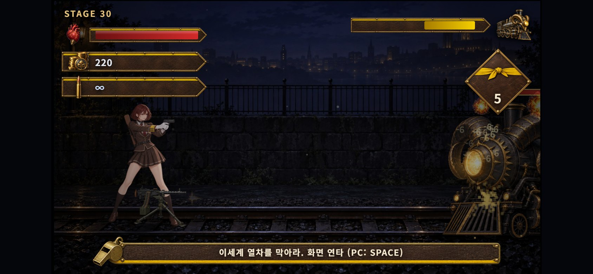
1호차가 터진 직후 WARNING, 불붙은 2호차가 이어서 온다. 2호차를 막으면 +60G, 마일스톤 공로 +3.
수치는 추정치다. 출시 뒤 run_end의 스테이지 분포(어디서 이탈하는지)를 보고 다시 맞춘다.
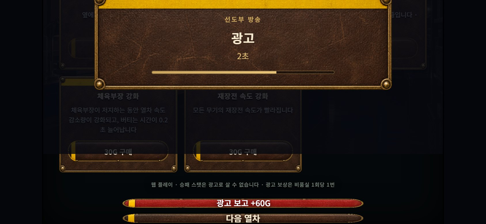
보상형 광고 스텁(2초). 실제 SDK를 붙여도 규칙은 같다.
보상형 광고만 쓴다. 강제 광고 없음. 보상은 +60G, 비품실 한 번에 한 번.
왜 한 번인가: 광고 1회 = 열차 2대 값이다. 무제한이면 광고 반복으로 상점 트리를 다 사게 되고, 「승패 스탯은 광고로 팔지 않는다」가 골드를 거쳐 깨진다.
팔지 않는 것: 무적, 스테이지 스킵, 승패 스탯, 공로.
웹 광고형이다. 설치 유도 광고와 첫 판이 다르면 바로 죽는다. 숫자 없이 유저를 사지 않는다.
크리에이티브는 실제 1스테이지 라이브 화면을 캡처한다. 선도부장 왼쪽, 열차 오른쪽, 좀비가 내린다. 후반 보스나 상점 풀세트를 광고에 넣지 않는다.
1스테이지 좀비는 필수다. 위협이 없으면 연타할 이유가 없다. 클리어는 짧게, 못 막으면 바로 오버가 보이게.
탭마다 총구 화염·샷 소리·진동. 사운드 켜진 상태에서 첫 판을 돌린다.
포털(Poki·CrazyGames류)에 먼저 올려 무료 트래픽으로 클리어율·D1을 검증한다. 스팀과 같이 밀지 않는다.
1스테이지 클리어가 안 나오면 광고를 끄고 첫 판을 고친다. D1이 안 나오면 근무 보상을 고친다. 그 다음에만 소액·짧게 태운다.
| 이벤트 | 언제 | 읽는 법 |
|---|---|---|
visit | 페이지를 열 때 (day = 첫 방문 후 며칠째) | D1 = day 1에 visit한 ID ÷ day 0에 visit한 ID |
stage1_start / stage1_clear | 1스테이지 시작 / 클리어 | 1스테이지 클리어율 = clear ÷ start (목표 70%) |
stage_clear, run_end | 스테이지 클리어, 판 종료(도달 스테이지·공로) | 스테이지별 이탈 분포 |
ad_reward, commute, perk_buy | 광고 보상, 근무 체크인, 강화 구매 | 광고 수요, 재방문, 공로 순환 |
train_stopper.html의 <meta name="stt-analytics">에 넣는다. GA4 스니펫이 있으면 같은 이벤트가 GA4로도 간다. 지금은 비어 있다 — 비어 있으면 출시하지 않는다. 설정 화면의 숫자는 이 기기 것뿐이라 판단에 쓰지 않는다.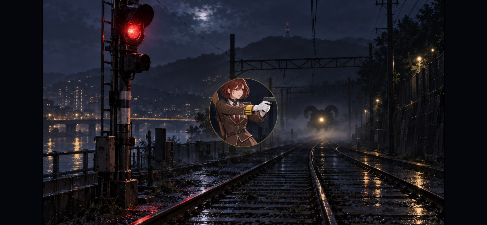
?dev)에만.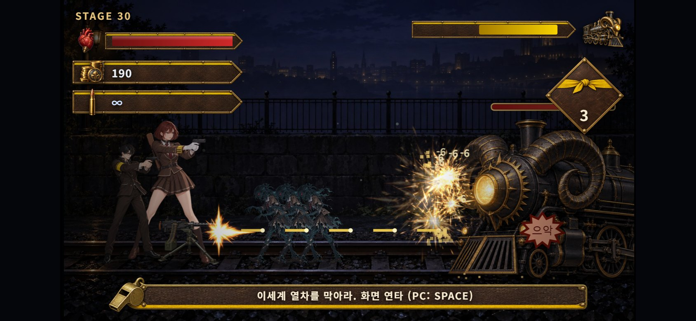
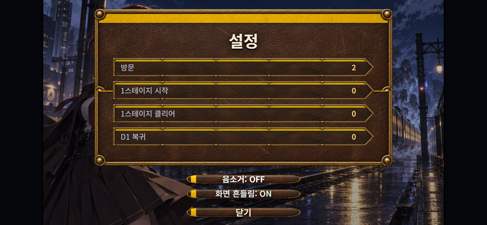
| 항목 | 규칙 |
|---|---|
| 화면 | 가로 16:9 고정(최대 1920×1080). 선도부장은 왼쪽 16% 지점, 열차는 오른쪽에서. HUD는 좌상(열차 체력·골드·탄약)·우상(거리·연타)·하단(힌트) |
| 배경 | 전투 배경은 눈높이 사이드뷰 선로 한 장이 화면 전체를 덮는다. 근접 선로 윗면 = 높이 82% 지면선. 캐릭터가 서는 35~82% 띠는 어둡고 장식 없음, 스카이라인은 작고 흐리게. 벡터 플레이스홀더(신호등·선로 두 줄·검은 띠)는 쓰지 않는다 |
| 캐릭터 | 전신 스프라이트, 발이 지면선에 닿는다. 선도부장 176px, 동료 148~156, 체육부장 라인 132~140, 좀비 100, 시민 80. 열차 그림의 앞면은 판정선(x−130)에 맞춘다. 총구 좌표는 그림에서 실측한 비율 |
| 글꼴 | 영문 제목·배너(STOP THE TRAIN, STAGE 01, TRAIN BREACH)는 Cinzel. 나머지는 Noto Sans KR. 이미지 안에 글자를 굽지 않는다 |
| 색 | 배경 남흑 #07080f·#10131c / 가죽 갈색 / 황동 #c9a45c·#e8c37a / 완장 노랑 #f5d000(강조·거리 바) / 크림 글자 #f6ead0 / 경고·광고 빨강 #e35d6a. 열차 체력 바만 빨강 |
| UI 키트 | 갈색 가죽 + 황동 리벳 + 노란 완장 띠. 버튼은 왼쪽 끝에 띠가 감긴 캡슐(광고만 빨간 가죽). 판과 바는 9-slice(border-image)로 그린다 — 끝단·리벳·호루라기·동전은 고정, 가운데만 반복. 못 사는 버튼은 흐리게 |
| 아이콘·이펙트 | 채택안 9 일러스트 아이콘(하트·금화·탄피·숫양 열차·장갑). 이펙트 6종(총구 화염·타격 스파크·화염구·연기·충격파·저지 장벽)은 가산 합성. 열차 위 체력 바는 황동 테두리의 얇은 바, 2호차는 화염 스프라이트로 불탄다 |
| 문구 | 짧은 명사형, 가운뎃점(·)으로 잇는다. 「클릭」이 아니라 「탭」. 단위: 골드 G, 연타 타/초, 공로는 숫자만 |
화면·문서·코드 주석에서 같은 것은 같은 이름으로 부른다. 오른쪽 열의 말은 쓰지 않는다.
| 쓰는 말 | 뜻 | 쓰지 않는 말 |
|---|---|---|
| 선도부장 | 플레이어 캐릭터 | 학생회장, 병사, 주인공(화면 문구에서) |
| 선도부 위원 | 자동 사격 동료 (→ 드론 → 람보) | 부회장, 동료 NPC |
| 체육부장 | 열차를 저지하는 아군 (→ 전사 → 불굴의 전사) | 방패병, shield man |
| 열차 / 1호차·2호차 | 적. 2량 편성이면 1호차 뒤에 2호차 | 기차, 트레인 |
| 좀비 | 열차에서 내리는 적(세계관 용어: 이세계 개체) | 몹, 몬스터 |
| 시민 | 열차 위에서 도움을 청하는 사람. 구하면 +30G | civilian |
| 연타 | 탭 입력과 그 속도(타/초) | 콤보, 매시 |
| 탭 | 화면을 한 번 두드리기. PC는 SPACE·클릭 | 클릭(화면 문구에서) |
| 판 | 타이틀에서 TRAIN BREACH까지 한 번 | 런, 라운드 |
| 스테이지 / 마일스톤 | 열차 한 대(또는 2량)를 막는 단위 / 10·20·30… | 라운드, 보스전 |
| 비품실 | 스테이지 사이의 상점. 골드로 판 안의 성장을 산다 | 무기고, 상점 |
| 골드 (G) | 판 안에서만 쓰는 재화. 판이 끝나면 사라진다 | 코인, 돈 |
| 공로 | 판을 넘어 남는 재화 | 포인트, 경험치 |
| 근무 / 근무 스트릭 | 매일 첫 판 체크인 / 연속 일수 | 출근, 출석 |
| 근무 수첩 | 공로로 영구 강화를 사는 화면(최고 기록 포함) | 최고 기록, 업적 |
| TRAIN BREACH | 게임오버 화면 제목 | 열차 파괴(이건 클리어다) |
저장소 폴더는 배포 사이트와 같은 모양이다. 배포는 train_stopper.html을 index.html로 바꿔 넣고 나머지 폴더를 그대로 복사한다.
| 경로 | 무엇 | 상태 |
|---|---|---|
train_stopper.html | 게임 본체 (배포 시 index.html) | 기준 |
train_stopper_assets/ | 스프라이트·배경·UI 판·아이콘·이펙트. 교체 전 원본은 git 이력에 있다 | 기준 |
plan/index.html · plan/shots/ · plan/art/ | 이 문서 · 배포 사이트 스크린샷(tools/shoot_live.py) · 설명용 생성 이미지 | 기준 |
plan/mash-feasibility.md | 연타 장르 시장성 조사 | 참고 |
concept/index.html | UI 보드(키트 1~18안), ref/는 캐릭터 레퍼런스 | 후보 |
tools/ | 아트: art_proto.mjs·art_fix.mjs(생성·편집, Elice Sunburst) → art_review.mjs(GPT-6 Astra 검수) → pack_proto_art.py·pack_fix_art.py(반영) → optimize_assets.py. 촬영: shoot_screens.py(로컬)·shoot_live.py(배포). 검증: verify_* | 기준 |
elice.env · elice_out/ | 이미지 API 키(커밋 금지) · 생성 원본(커밋 안 함) | 로컬 |
archive/ | v2 기획서, 학생회 세계관, 플로우 설계서, UI 1~6안 보드, 쓰지 않는 시안 | 폐기 |
v6 (2026-09-23): 배포 빌드 기준으로 전면 개정. 스크린샷 전부 교체, 설명 그림 추가, 화면 읽는 법·라인업·성장 도해 추가. 이전 판(v2~v5)의 결정은 모두 여기에 흡수됐다.